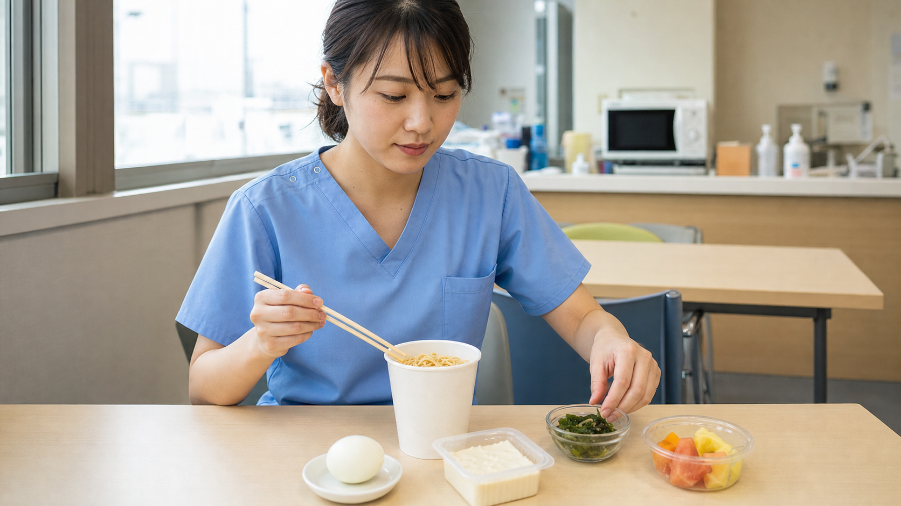
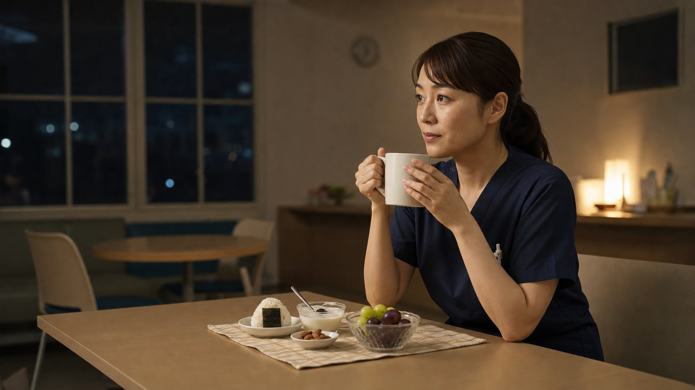

昼休憩に入れたと思ったら、残り時間はわずか。弁当を用意できなかった日は、休憩室のお菓子、菓子パン、カップ麺だけで済ませる。看護師なら、そんな日があっても不思議ではありません。
問題は、一度食べたことではなく、それだけで済ませる日が続くことです。午後の眠気や空腹感が気になるだけでなく、食塩、脂質、糖質に偏り、たんぱく質、食物繊維、野菜などが不足しやすくなります。
この記事では、忙しい日の選択を責めずに、いつもの昼食へ何を一つ足せるかを考えます。日勤の昼休憩を中心に、夜勤中の食事、間食、カフェインについても整理します。
お菓子、菓子パン、カップ麺を完全にやめる必要はありません。大切なのは、それだけを食事にする回数を減らし、「主食・主菜・副菜」をできる範囲で組み合わせること。眠気は食事だけで決まらないため、食事量、睡眠、疲労も一緒に振り返りましょう。
本記事は健康な成人を想定した一般的な情報です。糖尿病、腎臓病、高血圧、食物アレルギー、妊娠中などで個別の食事管理が必要な方は、主治医や管理栄養士の指示を優先してください。
忙しい看護師が「すぐ食べられる物」を選ぶのは自然なこと
看護師の休憩は、予定どおり始まるとは限りません。処置や検査が延びる、急変や入院が重なる、ナースコールが続く。短い時間で食べられ、途中で呼ばれても片づけやすい物へ手が伸びるのは、意志の弱さではなく勤務環境の影響です。
- 弁当を準備する時間がない
- 空腹が強く、すぐエネルギーになる物を選びたい
- 院内の売店や自動販売機で買える物が限られる
- 休憩室の差し入れを同僚と楽しむ機会がある
- 夜勤では食事の時間そのものが定まりにくい
台湾の病院看護師120人を4日間調べた研究では、夕勤・夜勤は日勤より総エネルギー摂取量が少ない一方、食事回数が少なく、間食の頻度と間食由来のエネルギー割合が高い傾向でした。夜勤者が単純に「食べすぎる」のではなく、十分な食事を取りにくい中で間食へ置き換わっている可能性が見えます。
お菓子・菓子パン・カップ麺だけで済ませる注意点
食品は製品ごとに栄養成分が違うため、「カップ麺は全部悪い」「菓子パンは食べてはいけない」とは言えません。ただし、それだけで一食を終えると、次のような偏りが起こりやすくなります。
| 選びやすい物 | 多くなりやすいもの | 不足しやすいもの |
|---|---|---|
| お菓子・甘い飲み物 | 糖類、脂質、エネルギー | たんぱく質、食物繊維、食事としての満足感 |
| 菓子パン | 糖質、脂質、飽和脂肪酸 | 野菜、食物繊維、主菜 |
| カップ麺 | 食塩、脂質 | 野菜、食物繊維、製品によってはたんぱく質 |
先ほどの看護師研究では、間食から取るエネルギーが多いことと、飽和脂肪酸の摂取割合が高いことに関連が見られました。ただし、これは観察研究であり、間食が直接病気を起こしたと証明したものではありません。
まずはパッケージの栄養成分表示で、エネルギー、たんぱく質、脂質、炭水化物、食塩相当量を確認しましょう。カップ麺はスープを残すと、表示された食塩相当量をすべて取らずに済む場合があります。
食後の眠気と集中力は「血糖値だけ」で説明しない
食後に眠くなる経験は珍しくありません。糖質を多く含む食品では食後血糖が上がりますが、「血糖値が急上昇したから必ず眠くなり、集中力が落ちる」とまでは言い切れません。食後の眠気には、食事量や内容、睡眠不足、疲労、午後に眠気が出やすい体内リズムなど、複数の要素が関係します。
眠気が気になる日は、昼食を抜くのではなく、一度に食べすぎないこと、糖質だけに偏らせず、たんぱく質や食物繊維を含む食品を組み合わせることから試せます。それでも強い眠気が続く、仕事中に眠り込む、いびきや睡眠不足が気になる場合は、食事以外の原因も含めて医療機関へ相談してください。
集中できないと感じたときは、昼食の内容に加えて、前夜の睡眠、連続勤務、休憩の不足、脱水、体調を確認しましょう。食事を整えることは対策の一部であり、十分な休息の代わりにはなりません。
昼休憩のごはんは「やめる」より一品足す

農林水産省の「食事バランスガイド」は、食事を主食、主菜、副菜、牛乳・乳製品、果物のグループで捉えています。毎回すべてを完璧にそろえるのではなく、まず昼食で「主食・主菜・副菜」のうち欠けているものを一つ足してみましょう。
| いつもの選択 | 足しやすいもの | 考え方 |
|---|---|---|
| カップ麺 | 卵、豆腐、サラダチキン、海藻サラダ | たんぱく源か副菜を追加。スープは飲み干さない |
| 菓子パン | 無糖ヨーグルト、牛乳、ゆで卵、野菜スープ | 糖質だけで終わらせず、たんぱく質を組み合わせる |
| おにぎりだけ | 卵、魚、豆腐、サラダ、具だくさんの汁物 | 主菜と副菜を補う |
| お菓子だけ | 小さなおにぎり、ヨーグルト、果物、ナッツ | お菓子を楽しみつつ、食事になる食品を加える |
「サラダチキンが正解」という意味ではありません。納豆、豆腐、卵、魚、乳製品など、価格、保存方法、食べやすさに合う物を選んでください。
休憩中のお菓子は完全にやめなくていい
差し入れのお菓子は、空腹を満たすだけでなく、同僚との会話や気持ちの切り替えになることもあります。お菓子を「禁止」にすると、かえって強く欲しくなったり、食べた後の罪悪感につながったりする人もいます。
- 袋のままではなく、食べる分だけ取り分ける
- お菓子を食事の代わりにせず、食後や軽食として楽しむ
- 甘いお菓子と甘い飲み物が重ならないようにする
- 差し入れは、その場で全部食べず後に取っておく
- 強い空腹になる前に、ヨーグルト、果物、ナッツなども選べるようにする
ナッツやヨーグルトも、量、味付け、アレルギーには注意が必要です。特定の食品を「食べれば健康」と考えず、選択肢の一つとして使いましょう。
夜勤のごはんと間食で意識したいこと

夜勤前に主な食事を取っておく
可能なら、夜勤が始まる前に主食・主菜・副菜を含む食事を取っておくと、勤務中に十分な休憩が取れない場合でも、軽食を組み合わせて対応しやすくなります。勤務中は一度に重い食事を詰め込まず、小さなおにぎり、卵、ヨーグルト、果物、無塩ナッツなど、食べやすい物を準備する方法があります。
午前0時から6時は、可能なら食事量を減らす
米国CDC/NIOSHの夜勤看護師向け教材は、通常の昼夜に近い食事リズムを保ち、可能なら午前0時から6時の食事を避けるか減らすことを提案しています。ただし、これは絶対的な禁止ではありません。空腹、体調、勤務時間によって必要なら、無理に我慢せず軽食を選びましょう。
カフェインは種類より「量と時間」
コーヒーだけでなく、緑茶、紅茶、エナジードリンクにもカフェインが含まれます。CDC/NIOSHは、夜勤でカフェインを使うなら勤務前半にし、終了の数時間前から控えるよう案内しています。帰宅後の睡眠が気になる場合は、デカフェへ切り替える方法もあります。ただし、デカフェもカフェインが完全にゼロとは限りません。
個人の準備だけでは限界があります。夕方や夜間も栄養面に配慮した食品を買えること、食べる時間が確保されることは、職場側にも求められる環境整備です。Smart Nurse Labも、夜間に働く看護師が無理なく食事を選べる仕組みやサービスが広がってほしいと考えています。
忙しい日の「最低限の組み合わせ」を決めておく
忙しいときに栄養成分を一から比較するのは大変です。職場や通勤途中で買える物から、「これなら選べる」という組み合わせを決めておきましょう。
冷蔵庫を使えない職場では、常温保存できる物や保冷バッグも選択肢です。持病やアレルギーがある場合は、この例をそのまま使わず、自分に合う組み合わせを専門職と相談してください。
まとめ：禁止より、頻度・量・組み合わせを見直そう
お菓子、菓子パン、カップ麺を一度食べたからといって、すぐに健康を損なうわけではありません。忙しい日に助けられる食品でもあります。
一方、それだけで食事を済ませる日が続けば、食塩、脂質、糖質に偏り、たんぱく質、食物繊維、野菜などが不足しやすくなります。まずは、卵、豆腐、ヨーグルト、果物、サラダなど、今の食事へ一つ足すところから始めてみてください。
眠気や集中力低下は、食事だけの問題ではありません。睡眠不足、疲労、休憩の取り方、体調も含めて振り返ることが大切です。そして、看護師個人の努力だけでなく、勤務中に食べる時間と選択肢を持てる職場環境も必要です。
参考資料・出典
- 厚生労働省：日本人の食事摂取基準（2025年版）
- 農林水産省：栄養素と食事バランスガイドとの関係
- Lin T-T, et al. Snacking among shiftwork nurses related to non-optimal dietary intake. Journal of Advanced Nursing. 2022.
- CDC/NIOSH：Diet Suggestions for Night-Shift Nurses
- CDC/NIOSH：Prepare for Sleep（カフェインと睡眠）
- U.S. FDA：Spilling the Beans: How Much Caffeine is Too Much?
- Reyner LA, Horne JA. Meal composition and its effect on postprandial sleepiness. 1997.
本記事は2026年7月23日時点で確認できる情報をもとに作成しています。研究結果は対象者や条件によって異なり、個人への因果関係を示すものではありません。掲載画像はすべて生成イメージであり、人物、施設、食品は実在のものではありません。